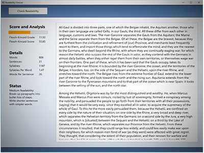
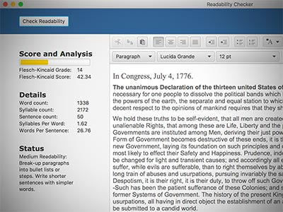
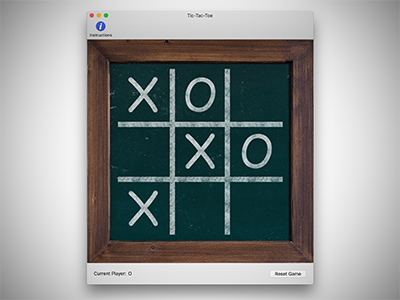
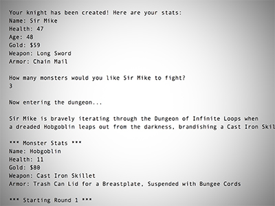
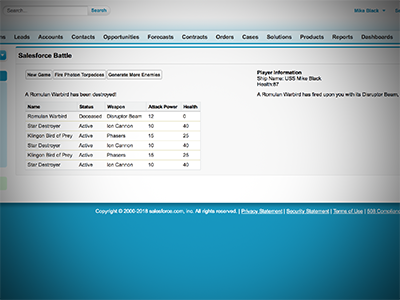
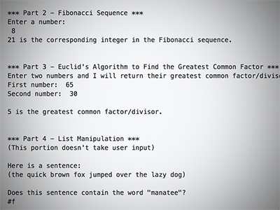
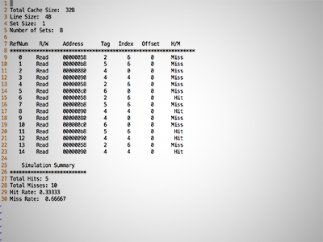
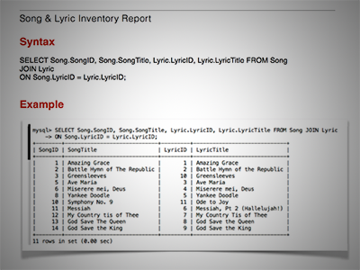

Projects
Readability Checker with C#

This program performs a Flesch-Kincaid readability analysis by scanning the characters in the text and counting the number of words, syllables, sentences, and other items, in order to determine the overall text readability. Statistics are provided, including brief suggestions for how to improve text readability. Both a Flesch-Kincaid score and grade level are calculated.
Git
*.exe
Readability Checker with Java

This is a Java version of the Readability Checker. It works the same as the C# version, but it may produce slightly different results because of differences between the RegEx implementations and because the Java version uses an HTML editor.
Git
*.jar
Tic-Tac-Toe with Swift and Cocoa

This is a simple, two-player, Tic-Tac-Toe game made with Swift and Cocoa for MacOS.
Git
*.zip
Dungeons and Object Oriented Dragons with Java

Create a knight and fight monsters in the "Dungeon of Infinite Loops!" This is primarily an exercise in using common Object Oriented Design concepts such as abstract classes, interfaces, inheritance and composition.
Git
*.jar
Salesforce Battle with Apex and VisualForce

This is a silly "space battle" simulator. It is primarily a vehicle to experiment with DML and become more accustomed to designing programs where the state only lasts for as long as a single transaction.
Git
Lambdas with Scheme

Scheme is a Lisp-based language that was developed at MIT. It's useful for "functional programming" as opposed to the more-familiar "imperative programming."
Git
Cache Simulation with C++

This program simulates a memory cache based on a source file provided to it. It prints a report based on its activity.
Git
Music Curator Database Design

Here's a (somewhat lengthy, sorry) overview of a database design for a fictional record label that needs to keep track of its releases.
*.pdf
Basic Set Theory and Logic
Are you having difficulty sleeping?
Here's playlist of videos that I made for a Discrete Math course as an undergraduate. They cover basic set theory, logic, and other topics that will help even the most caffeinated minds "catch their z's."